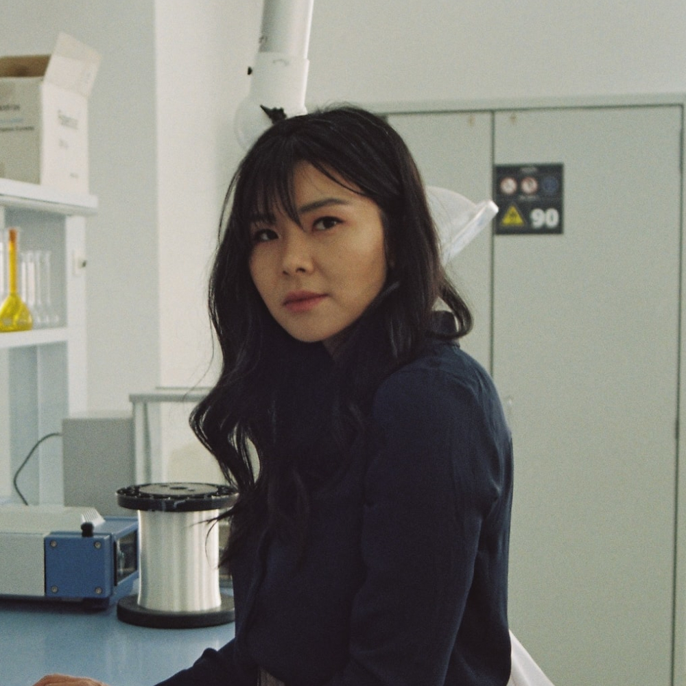
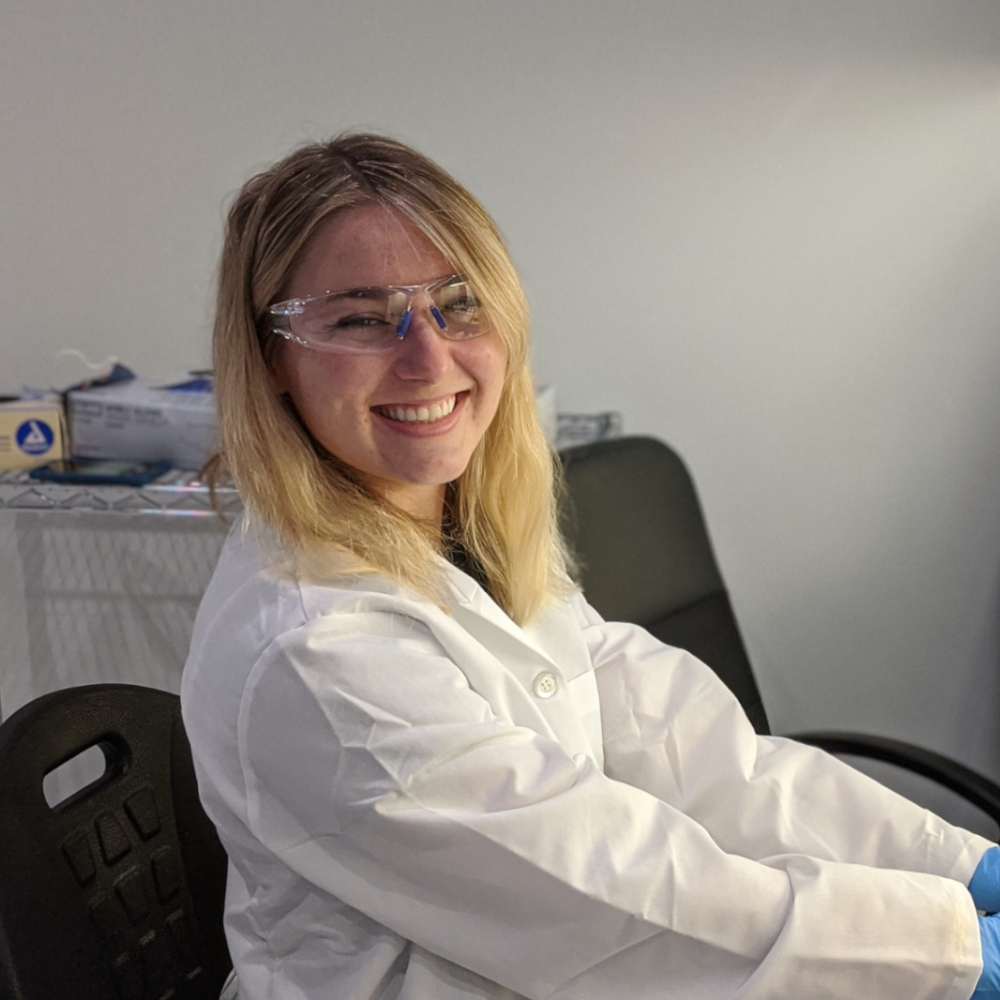

Equipo de Laboratorio DIAGNOVET
Dr. Yair Fernández
Licenciado en Bioquímica recibido en la Universidad Nacional de La Plata con Doctorado en Análisis Bioquímicos en Caninos y Felinos. Director de la Asociación de Laboratoristas Veterinarios. Profesor adjunto en la cátedra de Espectofotometría en la Facultad de Ciencias Exactas, UNLP.

Dra. Florencia Joon-Ho
Licenciada en Microbiología recibida en la Universidad Nacional de La Plata con Doctorado en Microbiología Apicada a Animales de Compañía. Secretaria General de la Asociación de Microbiología Veterinaria Latinoamericana.

MV María Aldana Ramos
Médica Veterinaria recibida en la Universidad Nacional de La Plata con especialización en Análisis Clínicos Veterinarios. Jefa de Trabajos Prácticos en la cátedra de Análisis Clínicos Veterinarios de la Facultad de Ciencias Veterinarias, UNLP.